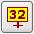

Edit Tools
Select Points Tool
ContourTool
Using the Contour Tool
Pencil Tool
Move/Copy Tool
Edit Actions
Sample Tool
Edit Areas
Nearly all of the spatial editor tools use edit areas
to determine which grid points to modify. You will need to know how to
define edit areas before using the spatial editor tools.
An Edit Area defines a set of grid points. These
points
may comprise a county, forecast zone, or any random area that you
define.
They may be saved and recalled later for reuse. In fact, there are two
ways to save edit areas: as an ordinary named set or as a QuickSet.
After you define a edit area you may save it as a
named
set. The simplest example of this type of edit area is a county. In
general,
named edit areas are saved once, recalled many times, and not changed
very
often.
Another way to save an edit area is as a QuickSet.
QuickSets
should be considered as a temporary method of saving edit areas as they
are easily overwritten. QuickSets are similar to the store button on a
calculator. They hold the state of an edit area temporarily while you
perform
some operation that requires a different edit area.
Edit Area Interface
The figure above is a snapshot of the edit area buttons on the Button
Bar. The operations include toggling, clearing, doing queries, setting
the edit area mode, and accessing/storing edit areas. Refer to
the
GFE
Toolbar documentation for more details.
Defining an Edit Area
There are several ways to define an edit area. You
can
recall a previously saved set, define a new edit area by hand, or
execute
a query that defines the set based on data values of any grid or grids
that you specify.
The simplest method of defining an edit area is to
define
one by hand. The Select Points tool was designed to allow you to define
edit areas interactively. When this tool is selected, dragging with MB1
selects an area while dragging with MB2 deselects an area. The
following
exercise will get you familiar with defining references sets by hand.
Load
an Edit Area from the Main Menu
Probably the easiest way to load an edit area is
from
the Main Menu. All of the edit areas that correspond to your
counties,
zones of various kinds, WFOs, and states are generated automatically by
EDEX. You can find them under the Main Menu item Edit
Areas.
- Purpose: To load a predefined edit area
- Make sure that the current edit area mode is set to Replace (=).
- From the main Menu Bar select Edit
Areas->Counties->[county
name of
your choice]
You should see the county you chose highlight in a white stippled
pattern.
This indicates that this area has been chosen to edit. Any edit
operation that you perform will be applied to this area.
Define an Edit Area by hand
- Purpose: To define a new edit area
- Make sure that the current edit area mode is set to Replace (=).
-
 Select
the Select Points tool.
Select
the Select Points tool.
- Move the cursor into the Spatial Editor.
- Press MB1 and drag the cursor to outline an area with the mouse.
You
should
see a white outline that defines the edge of your area.
- Release MB1. You should see the area filled with a white shaded
pattern.
You now have defined an edit area by hand. At this
point,
you could use one of the edit tools to modify the data over this new
area
that you defined. We discuss how to use tools in the
Edit
Tools section.
Repeat the above exercise, but this time select the union
(|) mode button beforehand. Note that in union (|) mode, each time you
define a new area the old area(s) remains and is combined with the new
area. Now select the intersection (&) button and repeat the exercise
again. Note that this time the result is the intersection of the newly
defined edit area and the current edit area. Only the areas that
overlap remain.
Erase an Edit Area
Now and then you may want to remove a portion of an
edit
area that you've already defined. The next exercise show you how to
erase
an edit area.
- Purpose: Remove a portion of the edit area
- Move the cursor near any edit area and press MB2.
- With MB2 pressed, drag another outline to define a new area that
partially
intersects with your first area.
- Release the mouse and observe that the intersected area is
removed from
the edit area.
Toggle an Edit Area
- Purpose: Invert the currently defined edit area
Occasionally, it is useful to invert (toggle) the
currently
displayed edit area. When you toggle the current edit area, all the
grid
points that were selected are deselected and all the points that were
previously
not selected become selected.
-
 Using MB1 click on the Toggle Button.
Using MB1 click on the Toggle Button.
Note that all the grid points that were selected have
been deselected and vice versa.
Clear an Edit Area
- Purpose: Clear the current edit area
Frequently you will want to clear the current edit
area
and create a new one. The clear button was made for this purpose.
- Make sure there is an edit area displayed in the Spatial Editor.
- Using MB1 click on the button
 .
.
The edit area has been cleared and no grid points are
selected.
A couple of handy utilities can be found on the MB3
pop-up
menu over the spatial editor, one that selects a contiguous edit area
based
on the grid point value under the cursor, and another that deselects a
contiguous edit area. We discuss these in the next two sections.
Select Homogenous Edit
Area based on Value
Purpose: To select an edit area based on value.
This function allows you to select an edit area based
on the value of the selected point and the value of the points
surrounding
it. To understand how this works, complete the next exercise.
- Clear the edit area as you did in the previous exercise.
- MB1 click on one of the grids in the Grid Manager to display it
in the
Spatial Editor and make it editable.
- Move the mouse cursor to middle of the Spatial Editor display and
MB3
press
and select Select Homogeneous Area.
You should see a new edit area that identifies those
grid points whose values are within the fuzz value of the point you
selected.
For example, if the fuzz value is 3, and you selected a grid point with
the value 10, all the points with value between 7 and 13 and that are
also
touching become selected.
- Move the mouse cursor to the middle of the Spatial
Editor display and
press
MB3 and select Set Fuzz Value... This will display the Fuzz
Value Dialog.
- Change the Fuzz Value so that it is two to three
times larger than its
current value.
- Select OK in the Fuzz Value dialog.
- Repeat steps 2-4 above, and note that the edit area
is larger, since
the fuzz value is now larger.
The fuzz value is meaningless for the Weather data
type.
When you select Select Homogeneous Area when the Weather weather
element
is editable, any points that are the same weather value and touching
are
selected.
Remove a Contiguous Edit Area
Purpose: To remove a contiguous edit area
- Using the edit area that you defined in the previous exercise,
move the
mouse cursor to any grid point in this area.
- Press MB3 and select Deselect Contiguous Area from the pop-up
menu. The
area identified by your mouse cursor is deselected.
Once you define an edit area, it is often useful to
save
it so you do not need to define it again. This exercise show you how to
save an edit area in a temporary location as a QuickSet.
Saving Edit Areas as QuickSets
Purpose: To temporarily save an edit area
- Define an edit area as you did in any previous exercise.
- Find the quick set store button
in the group of edit area buttons on the right side of the toolbar
click with MB1.
- Move the mouse cursor over one of the numbered buttons


 and with MB1 click any one of them.
and with MB1 click any one of them.
Now your edit area is saved under that particular
slot
and can be recalled at any time. The next exercise shows you how to
recall a saved QuickSet.
Loading a QuickSet
Purpose: To restore a previously saved QuickSet
- Clear the edit area, if there is one currently displayed in the
Spatial
Editor.
- Find the same button
under which you saved the QuickSet in the previous exercise.
- Click MB1 on this button.
Note that the edit area that you saved as a QuickSet
is now displayed.
To review, clicking the button
and then a button labeled with a number
saves
the currently displayed edit area under that slot. Simply clicking the
number
displays that edit area. QuickSets are intended
for
temporary storage of edit areas. QuickSets slots should be considered
volatile,
since there are a limited number of them and that they are not
considered
to be "owned" by any user. To save edit areas more permanently,
store
them as a "named" edit area.
Edit Area Groups
Since the list of Edit Areas can be very long (well
over
100), the GFE provides you with a way to organize them. Any Edit
Area that you define can be saved under any combination of edit area
groups.
The GFE provides two ways to assign a particular Edit
Area under one or more Edit Area Groups. One way is to assign the
group(s)
when you initially save the EditArea. The other method is to first save
the Edit Area without assigning any group and then use the
Save
Edit Area Groups Dialog to assign Edit Areas to Edit Area Groups.
To assign a group to your Edit Area as you are saving
it, follow the instructions in the section for
Saving
Named Edit Areas , but this time select or type in the Edit Area
Group(s)
before you click "Save." That operation will not only save your
Edit
Area, but also assign it to the group or groups that you selected
before
you clicked "Save". Note that if you do not assign a group to a new
edit
area, it will automatically be assigned to the "invisible" group
"Misc".
The only Edit Areas that are contained in the group "Misc" are those
that
have not been assigned to any other group. Once you assign an
Edit
Area to a group, it will no longer appear under the "Misc" group name
in
the Edit Area Query Dialog.
Now let's assume that you've saved some Edit Areas
but
not yet assigned them to any groups. To simply assign Edit Areas
to groups, use the Save/Delete Edit Area Groups dialog found within the
Edit Area Query dialog under the "File" menu item. Here's an
exercise
that steps through this process.
Purpose: To save assign an Edit Area to a group name
- From the "Save/Delete" menu item in the Edit
Area Query dialog , select "Save
Edit Area Group... ".
- When the dialog appears, select one of the Edit Area
Groups, located in
the list on the left.
- Select one or more Edit Areas that you want included
in that Edit Area
Group.
- Finally, select "Save".
Now when you use the Edit Area Query Dialog, those
Edit
Areas will appear under the group to which it was assigned.
If you want to make a new group name, just type the new name in the box
labelled "Identfier" and a new group name will be created.
To remove an Edit Area from a group, bring up the
Delete
Edit Area Group Dialog again. Note that when you select any
Edit
Area Group, the Edit Areas in that group automatically
highlight.
To remove one or more of the Edit Areas from the selected group, simply
toggle them off and select "Save".
Loading Named Edit Areas
Purpose: To display a named edit area
Once you have saved an edit area as a named set, you
will want to load it as the current edit area. The next exercise
explains
how to do this.
Select the Clear button
to clear the Spatial Editor of any current edit areas.
- Select the button
 from the toolbar.
from the toolbar.
- Once the Query
dialog
appears, select a named edit area from the column titled "Edit Areas".
- Select "Submit".
The edit area you selected in the dialog should now
be
displayed in the Spatial Editor. If an edit area is defined when you
load
a named edit area, it will be replaced, unioned, or intersected with
the
named area, depending on the edit area mode.
Saving Named
Edit Areas
Purpose: To save the current edit area as
named set
There are some edit areas that you will want to save
permanently as named sets rather then temporarily as QuickSets. This
exercise
will show you how to save a named edit area.
- Define an edit area as you did on any of the previous exercises.
- From the Query Dialog mani menu select Save/Delete -> Save
Edit
Area.
- In the box labeled "Identifier", type in a unique name. (Don't
bother
with
the Group Name(s) column just yet.)
- Select "Save Active Area" and your edit area will be saved in the
database.
Note that the GFE will automatically generate Edit Areas based on map
data
for your local area. For example, in the
Edit
Area Query Dialog, you should see each one of your counties and
zones
listed. There is no need for you to define these areas since they
already are defined for you.
Deleting Named Edit Areas
Purpose: To delete a named edit area
from the inventory
Occasionally you will want to remove a named set from
the edit area inventory. This exercise will show you how to delete a
named edit area.
- Select the button located on the toolbar.
- From the Edit
Area
Query Dialog , select "Save/Delete" from its menu bar.
- Select one of the names listed with an MB1 click.
- Select "Delete Selected Area" with MB1.
The edit area will be removed from the inventory.
Edit Area Queries
In a previous exercise, you learned how to define
edit
areas by hand. In the next set of examples, we will demonstrate how to
define an edit area based on data values. Defining the edit area for
one
weather element based on data values of another weather element makes
it
easier to keep the weather element values consistent. For example, you
may want to select all of the areas where it is raining and then assign
100% cloud cover to those points. The following exercises will show you
how to define edit areas via queries.
Simple Query
Purpose: Define a new edit area via simple
query
- Set up the Spatial Editor display so that a temperature grid is
displayed.
- Carefully examine the range of values on this grid.
- Select the
Query button from the toolbar.
- When the Edit
Area
Query dialog appears, select "T" from the column labeled Weather
Elements.
- Next, from the operators columns, select > (greater than).
- Now, select a temperature value (e.g., 70) using the number keys.
Make
sure that you have selected a value such that there are grid values
that
are greater than the value you typed in.
- Finally, select the "Submit" button, which can be found at the
bottom
of
the dialog.
When you submit your query, the GFE calculates all of
the points that satisfy the expression. You should see one or more edit
areas defined on the Spatial Editor. If you don't see any edit areas,
repeat
the last 4 steps above, but this time choose a temperature value that
will
result in a valid edit area.
If you had wanted to, you could have simply typed in the query as: T
> 70
A more complex query
In this exercise we will execute a query expression that defines a
range
of temperature values.
Purpose: Define a new edit area via more
complex query
- Clear the current edit area by selecting
from the toolbar.
- With temperature still loaded, select the
query button, if the query dialog is not already visible.
- Type the following into the query box: (T
> 70) & (T < 90)
- Select the "Submit" button.
This time all of the grid points whose value is
between
70 and 90 should be selected. This type of query demonstrates how to
select
a range of values using queries. When using the '&' or '|'
operators,
you must enclose the surrounding entries with parenthesis.
Multiple Parameter Queries.
Queries are not limited to single parameters. The
following
example shows how you can execute an expression that includes multiple
queries.
Purpose: To use multiple parameters in a
queryLoad the
dewpoint
(Td) parameter into the GFE if is not already loaded.
- Display the dewpoint grid on the Spatial editor such that both
temperature
and dewpoint are displayed at the same time.
- Examine an area on the screen and generally note the temperature
and
dewpoint
over this area.
- Select the Query
dialog button to display the query dialog.
- Use the selectors or type in a query that resembles the
following: (T
> 80) & (Td > 50)
- Select the "Submit" button.
For this query to work properly, there must be some
area
in the display where the temperature is greater than 80 and the
dewpoint
is greater than 50. If this is not the case, then repeat the exercise
again
but use appropriate values for your data set. Once the values fit the
data,
you should see an area defined that identifies those grid points that
satisfy
the expression that you defined.
By this time, you should start to understand why
defining
edit areas via queries is so powerful. This method allows you to define
and edit data based on data values, thereby linking the weather
elements
together in a consistent way. For example, a previously defined QPF
field
can be used to help you define the Probability of Precipitation (PoP)
field.
Not only are forecast weather elements more consistent, but the need to
tediously define edit areas by hand is greatly reduced. Using queries
in
this way encourages you to think meteorologically.
Complex Queries
Queries are simply expressed in numpy. Thus the
techniques
you use to write
smart tools and
smart
initialization scripts may also be performed in the query engine,
just
as long as the result is a "mask" representing whether a grid cell is
marked
"on" or "off". Thus, numerical functions may be used as well as
numerical
expressions.
For example, the following query calculates the dew point depression
and then selects points where the depression is less than 4 degrees:
(T - Td) < 4
Here is an example of a numerical query to determine which the T
from
the Fcst and T from the NAM12 are not within 4 degrees of each other;
note
the use of the numerical absolute() function:
absolute(T -
T_SFC_BOU_GRID__NAM_20030314_1200)
> 4
The above query also introduces the concept of performing queries on
non-Fcst database grids. There are several more convenient
formats
than that shown above, please refer to the Edit
Area and Query Dialog for more details.
Queries on WEATHER and DISCRETE data are also complex. The
Edit
Area and Query Dialog provides several shortcuts so you don't need to
remember
the specific syntax. The options permit exact matches or
"contains"
matches. For example, you can search for any instance (i.e., any
coverage, any intensity) of RW (rain showers) using this query:
mask(Wx, ":RW:")
Intimate knowledge of the format of the WEATHER "ugly" string makes
this job easier, even though the dialog provides automatic filling if
desired.
The weather query above will match any grid cell that contains any
form
of RW. If you wanted to make an exact match of only the RW, then
the query would be similar to:
mask(Wx, "^Sct:RW:-:<NoVis>:\Z", 1)
If you want to select the inverse of an edit area, for example, the
opposite of the above statement, then you use the logical_not()
function. The following selects everything but Sct RW-:
logical_not(mask(Wx,
"^Sct:RW:-:<NoVis>:\Z", 1))
Wind queries use the "FROM"
direction. Wind is presented as a tuple, so if you want to do a
query based on wind speed, use Wind[0]. If you want to do a query
based on wind direction, use Wind[1]. For example, the following
wind query looks for speeds greater than 25 and directions between NW
(325) and NE (45):
(Wind[0] >
25) and (Wind[1] > 325) and (Wind[1] < 45)
Saving Edit Area Queries
Edit Area Queries can be saved just like ordinary
"polygon"
queries. Once you have submitted the query, select the save
button
to save that query. Note that it will be saved as a query so that
when you submit it again, the result may be different, depending on the
particular data values on your display.
Important note about Edit Area Queries! Many
of the product generation applications accept one or more edit areas as
input to allow you to trim the product to a domain of your
choice.
Unfortunately, these product generation applications cannot accept edit
area queries as input to generate a product. Edit Areas passed
into
these routines must be "polygon" areas that are defined by boundaries
not
queries. Specifiying a query to a these applications will likely result
in a "blank" product. This restriction will be lifted in the
future.
Edit Tools
Spatial Edit tools (with the exception of the Contour
tool and Pencil tool) require that you first define the set of grid
points
to which you want the edit operation to apply and then apply the
operation.
Tools consist of the Select Points, Contour, Pencil, Move/Copy, and
Sample.
These tools are selected using the GFE Toolbar and then particular
mouse
actions do different editing operations. Refer to the
GFE
Toolbar Reference Guide for more details on the mouse button
assignments.
Also, you can set up keyboard shortcuts for these tools. (See
gfeConfig
Keyboard Shortcuts).
Select Points Tool
- Purpose: To define an Edit Area
The Select Points tools allows you to define and
modify
edit areas. Perform the following exercises to learn three different
ways
Select Points tool can edit your Edit Areas.
- Select the Select Points tool from the Button
Ba
r (see figure above).
- Press MB1 and drag a closed outline anywhere on the Spatial
editor
display.
- Note that a white shaded area appears that indicates the extent
of your
edit area.
- Now adjust the edit area by drawing another closed outline with
MB2
that
includes part of the area you just defined.
- Note that the area that was inside this second outline is removed
or
deleted.
The MB2 drag operation trims an existing edit area.
- Next, press MB3 and select Deselect Contiguous Area. Note that
the area
that you defined earlier is deleted.
ContourTool
- Purpose: Modify grid values by drawing
and adjusting contours
The contour tool lets you define or adjust a gridded
field by drawing and adjusting contours. There are four different
operations
supported by the contour tool: draw a new contour, adjust an existing
contour,
delete a contour, and add a new contour. Because converting from
contours
to the actual grids can take several seconds, the contour tool allows
you
to perform as many of these operations as you like before the grid is
actually
generated. And there are two algorithms from which to choose that
convert
your contours into a gridded field. We will define the operations that
the Contour Tool offers, and then demonstrate each one in the exercises
that follow.
This operation allows you to draw a new contour with
a value that you choose from the Pickup Value dialog or from the
Color
Bar located at the top of the Spatial Editor display. To perform
this
operation, you first select the value of the contour and then draw the
contour on the Spatial Editor display.
This operation lets you modify the position of a
contour
that already exists. After you adjust any contour, the grid is
immediately
recalculated.
The Add Contour operation inserts a new contour at
whatever
location you click. Its value is same value as the gridpoint you
clicked
upon. After adding a new contour in this way, you may adjust it using
the
Adjust contour operation.
The Delete Contour operation removes a contour from
the
display. Contours that are removed are not used when calculating a new
grid from contours.
Using the Contour Tool
Unlike the other edit tools, the Contour Tool lets
you
make many changes to the display before the gridded values are actually
modified. You can draw, add and delete as many contours as you like
before
you command the grid to be recalculated. If you use the adjust
operation,
however, the grid will be recalculated automatically. Once the grid is
recalculated, you can make further modifications and recalculate
again.
Once you are done manipulating the contours, the Button-3 popup menu
gives
you the options to Calculate New Grid. Selecting this options
will
generate a new grid based on the contours that you just edited.
The Contour Tool works only on weather elements that
are of type scalar. For example, you cannot use the Contour Tool to
edit
the elements wind or weather. The following exercise will help get you
familiar with the Contour Tool.
- Purpose: Draw a new contour
- To begin, move the mouse cursor over to the Grid Manager and
decide
which
scalar element you would like to edit.
- Press and hold MB3 over a gap (not over a grid) and select Create
From
Scratch. If you were successful, a small yellow rectangle should appear
and its corresponding legend in the Spatial Editor should show that the
grid is ready to edit.
- Next, select the Contour Tool icon from the Button Bar. The icon
looks
like:
- Now, you are ready to draw some contours. Pick a value from the
color
bar,
located at the top of the Spatial Editor, by clicking MB1 or MB2
on whatever value you like.
- Move the mouse cursor over the Spatial Editor. Press MB1 and drag
to
define
the position of this new contour. You should see a thin white line
trace
your path.
- When you are finished drawing this contour, release MB1.
- Once you release, you should see small contour labels appear
adjacent
to
the contours. This label indicates the value of the contour that you
just
drew.
- Repeat steps 5 and 6, but select a new contour value from the
color
bar.
Continue defining new contours until (in your best judgement) the
contours
adequately define the grid. Try to draw the contours so that the edges
touch the sides of the data area, or close the contour on itself.
Drawing contours this way yields the best results when the grid is
recalculated.
- Now generate the grid based on your contours by pressing MB3
anywhere
in
the Spatial Editor (except over the legends) and select from the pop-up
menu Calculate New Grid.
- After a few seconds a new grid should appear that correlates with
the
contours
that you drew earlier.
- Purpose: Adjust an existing contour
The next exercise shows you how to adjust the position of contours that
already exist. With the adjust operation, the grid is recalculated
automatically
after you adjust each contour. So, when adjusting contours there is no
need to select the command Calculate New Grid.
- Using the grid that you just created, move the mouse cursor over
one of
the existing contours.
- Press and hold MB2 and drag a new position for this contour. For
the
best
results, make sure that you release MB2 over the same contour on which
you started.
- The grid will be recalculated and displayed using the new
position of
the
contour that you just modified.
- Purpose: Delete a Contour
Occasionally, you may want to remove a contour. The delete contour
operation
was made for this purpose.
- Using the same grid as in the exercise above, move the mouse
cursor
over
any contour.
- Click MB2 over this contour. You should see the contour disappear.
Removing a contour from the display means that the
removed
contour will not be used in the calculations when converting the
contours
to a grid. Typically you would remove a few contours before drawing new
ones of a different value and location to replace them. Note that
the remove contour function removes the closest contour from the click
point. If you are not careful to click close to the contour that
you want to remove, you may remove the wrong one.
- Purpose: Add a new Contour
Sometimes you may want to adjust gridded values
between
contours without modifying the existing contours. The Contour Tool
allows
you to add a new contour to the display so that you can manipulate the
gridded values that lie between the typical contour intervals.
- As with the previous Contour Tool exercises, make sure that you
have an
editable scalar grid displayed in the Spatial Editor.
- Move the mouse cursor to a location that is between two contours.
- MB1 click at a location that is between the two contours. You
should
see
a new contour appear with a value that has the same value as the grid
point
upon which you clicked.
- Now use MB2 drag to adjust the position of this new contour. When
the
grid
is recalculated, note that the data changes are primarily limited to
the
data that lie in-between the two original contours.
When you add a new contour with MB1 click, that
contour
value will continue to be displayed after the grid is recalculated,
until
you switch to a new grid or new weather element. In other words, new
contours
added this way will persist until you edit a different grid.
Contour Tool Notes
- After you have modified a contour, but before
you recalculate the grid,
the contours and the gridded data are inconsistent. If you attempt to
edit
a new grid or change to a different edit tool while in this
inconsistent
state, a dialog will appear asking if you would like to recalculate the
gridded data based on your modified contours before moving on. If you
click
"yes", the grid will be recalculated before switching to the new grid
or
new edit tool. If you select "no", all of your contour edits since the
previous recalculate operation will be lost and the GFE will switch to
the new grid or new edit tool.
- The Contour Tool allows you to cross contours.
When drawing new
contours
(MB1 drag) over existing contours, the "old" contours are partially
removed
so as not to convey conflicting and ambiguous information to the
contour-to-grid
algorithm. To reflect this visually, the deleted portions of the old
contours
are removed from the display. Try this out. Pick a new value from the
color
bar and draw a new contour near some existing contours. Note that
portions
of the old contours are removed indicating that those portions will not
be used when calculating the new grid.
- There are two different algorithms that convert
the contours to a
gridded
field. You can select your favorite from the main menu under the menu
item
GFE->Editing Preferences->Contour Server Selection. Each
algorithm has
its strengths and weaknesses with respect to performance and accurately
generating a grid from contours. We strongly recommend that you use
generate
grids using each algorithm and determine for yourself which works best.
Keep in mind that a set of contours represents a gridded field only
approximately.
There are many potential gridded field solutions for a given set of
contours.
Each algorithm implements a slightly different solution and therefore
will
produce different results.
- Because contours only approximate the gridded
field, the better you
define
the field, the better the result. The more contours you define for a
particular
field, the more likely that you will be happy with the resulting grid.
Sometime the algorithms will produce gridded fields that appear to be
noisy.
The Smooth edit action will generally remove this noise in the
data.
You will get the best results when you:
- Draw contours to the edge of the grid or that
close in on
themselves.
Contours that stop before the edge tend to generate "spikes" near the
end
point.
- Draw many contours rather than fewer as the
contour-to-grid algorithm
has
more information with which to generate the grid.
- When the Contour Tool is selected, the pop-up
menu includes several
operations
that will affect the set of contours.
- Calculate New Grid - Selecting this
option will calculate
a new
grid based on the contours that you just edited. In general, only
the area under the modified contours will be modified. Grid
values
in areas that you did not modify will not be changed. So, if you
are satisfied with the contours in a particular area and you don't
change
them, they will not be modified.
- Undo Last Contour Edit - This will
reverse the last
contour edit
that you made. If you added a new contour, it will be
removed.
If you deleted a contour, it will be added back. If you adjusted
a contour, the old contour will be restored. If you deleted
all of the contours with the Delete All Contours operation, all of the
contours will be restored to their previous state.
- Delete All Contours - Selecting this
item will remove all
of the
editable contours from the display. This effectively allows you to
throw
away all existing contours and edit the grid from scratch. Simply
clicking
button 1 in any location will add back a contour whose value
corresponds
to the grid value under the cursor. So you may choose to delete all of
the contours and then add a few back in areas that you want to preserve
the existing gridded data.
- Contour Adjust Influence
- Selecting this
option will
cause a cascade menu to appear that lists a set of distances in
kilometers.
Selecting one of these distances will affect the distance over which
the
Contour Adjust operation modifies the grid points. The&
largest
value affects about six times the distance from the new contour
poistion
than the smallest value. The Contour Adjust operation and
influence
works exactly like the Pencil Tool.
In
fact, if you change the Contour Adjust Influence for a particular
parameter
in the Contour Tool, that same influence will be applied if you use the
Pencil Tool later.
- Note that you can add or remove contours by
changing the contour
density
from the Spatial Editor product labels.
Pencil Tool
The Pencil Tool can be thought of as a contour
adjustment
tool, but it does not actually adjust contours. The Pencil Tool assigns
a specific value to a set of grid points and then recalculates the grid
points nearby. The result is that the gridded data reflect the new
position
of the contour. You don't need to display a particular grid as contours
for the Pencil Tool to work. It is envisioned that the Pencil Tool will
be integrated with the Contour Tool at some point in the GFE
evolutionary
process since the Pencil Tool and the Contour Adjust operation are
essentially
identical.
- Purpose: Modify grid values by
adjusting the position of
contours
The pencil tool allows you to "redraw" the position
of
a contour. An algorithm recalculates the grid to reflect this new
contour
position.
- Load a scalar grid (e.g., Temperature) into the Spatial editor
and make
it editable.
- Make sure that no Edit Areas are currently active.
- Select the Pencil tool with MB1 (see figure above).
- If you like, you can make contours visible by pressing MB3 over
the
grid
lable in the Spatial Editor and select Display Attributes. Turn on the
Contour Image Visual type check button.
- Move the cursor over a contour, press and hold MB1 and draw a new
position
for the contour.
- Release MB1.
As you drag the cursor with MB1 pressed, a white line
appears that defines the new position for this contour. When you
release
MB1, the grid values are modified such that the new contour will be
drawn
very near the line you identified.
- Redraw several more contours using the Pencil tool
and get familiar
with
how it works. Note that you are allowed to cross contours.
Pencil Tool Width
The button-3 popup menu contains the option to
change the Pencil Tool Width. Making this value smaller modifies
a smaller area on either side of the newly modified contour.
Making
this value larger modifies a larger area on either side of the newly
drawn
contour. To become familiar with this feature, change the Pencil
Tool Width to its smallest value and modify a contour. Then
change
it to its largest value and modify another contour. Note the
relative
difference in the two operations. The individual
influence
sizes can be configured via your GFE configuration file. Note that the
Pencil Tool Width is Weather Element dependant. Changing the
Pencil
Tool Width for one Weather Element will not affect the Pencil Tool
Width
for any other Weather Element. The Pencil Tool Width is defined
on
a per Weather Element basis.
Pencil Tool with Active Edit Areas
To better control changes to your grids, the Pencil Tool operations
are restricted to any active Edit Areas that you have defined. If
there are no Edit Areas active, then the Pencil Tool beahves as if the
entire grid is the active Edit Area. For example, if you first
select
an edit area and then repeat the exercise above, you will see that any
changes that were made are confined to the Edit Area that you
selected.
The data values are identical to what they would be if no Edit Areas
were
active, but again changes are restricted to those grid points that lie
inside the active Edit Area. Note that if
your
Pencil Tool operation does not go near the active Edit Area, no changes
to your grids will occur. To turn off this feature, simply
clear
the Edit Area. If you have an Edit Area that you would like to save,
but
still use the Pencil Tool as if no Edit Area were active, you can save
the Edit Area with a QuickSet
button or simply clear the area and recall it again with an MB3 pop-up
command Undo Area Edit.
Using the Pencil tool with Wind
Note that the Pencil Tool will also work on grids of type vector,
such
as wind. The algorithm is virtually identical except that the
speed
and direction are considered as separate components and are
recalculated
independently. Try the Pencil Tool with a wind grid to get an
idea
of how it works on data of type vector.
The Streamline Tool
The Pencil Tool works like a streamline editor for a given set of
conditions.
To use the Pencil Tool as a streamline tool, make a Wind (or any other
vector-type weather element) active. Then from the main menu
select
GFE->Editing
Preferences->Vector Edit Mode->Direction Only or from the MB3
pop-up
menu over the Spatial Editor select Vector Edit Mode->Direction
Only.
When the GFE is in this mode the Pencil Tool behave line a streamline
editor.
To use it, select the tool, press and hold MB1 and drag a line in
the direction you want the wind to blow. For example, if you drag
a line from northwest to southeast, all of the wind values within the
Pencil
Tool width will now indicate a northwest wind. Give it a
try.
Note that with a large enough Pencil Width you can draw a circle in a
counter-clockwise
direction with the tool and create a large cyclonic circulation in the
wind field. Remember that this tool
works
only on weather elements of vector type and when the Vector Edit Mode
is
set to DIrection Only.
Using the Pencil tool with Weather and Discrete
In the case of weather, the Pencil Tool will expand the extent of
the
weather/discrete (or No Weather/Discrete) that you select. When
using
the Pencil Tool on Weather, you must begin and end the Pencil Tool
operation
on the same contiguous area of weather/discrete or an error will
result
and no grid data will be changed. Try the following
exercise
to learn how to edit weather with the Pencil Tool.
- Purpose: Edit the extent of various
areas of weather using
the Pencil
Tool
- Load the "Wx" weather element into
the GFE
(if not already), select
a grid and make it editable.
- Select the Pencil Tool.
- Find a contiguous area of weather such as "Sct
RW-".
- Move the cursor inside this area and press and
hold MB1.
- Drag the cursor (while holding MB1) to define a
new boundary for this
weather
area.
- Make sure that your MB1 drag operation ends in
the same contiguous
weather
area in which you started.
- Release MB1
Note that you have now defined a new boundary for the weather area in
which
you started. Note that this is not a "paint" operation. The
Pencil Tool defines a new
boundary for the weather area.
It
does not assign values along the draw path like the algorithm that
operates
on scalar or vector data. You can also use the Pencil Tool to
make
any area of weather smaller. Simply start in an area that is
defined
as "No Weather" and define the new boundary. If the line you draw
crosses into any other weather area, the boundary of that area will
change.
Be sure to end your drag in the same "No Weather" areaas you started.
Give
it a try. Note the change in the weather grid.
Move/Copy Tool
- Purpose: Adjust the spatial position of
grid values
Occasionally the values of the grid points are
reasonable,
but you may not agree with the location of certain features. Once you
have
identified the feature as an edit area with the Select Points tool, you
can adjust its location with the Move/Copy tool.
- Load a grid into the Spatial Editor and make that grid editable.
- Find a feature that you would like to copy.
- Pick the Select Points tool and define an edit area over your
feature.
- Pick the Move/Copy Tool by clicking MB1 on the Move/Copy tool
icon.
- Move the cursor over the selected area, press and hold MB1, drag
the
feature
to some other location, and release the mouse button.
Note that the feature you selected has been copied to
a new location. The original feature (at least the part that did not
overlap
the copied area) was left untouched. Now try the "Move" operation by
following
the steps below.
- Press MB3 anywhere in the Spatial Editor display and
select Undo Grid
Edit.
- Move the cursor over the area that you selected in
Step 2.
- Press and hold MB2, drag the feature to some other
location, and
release
the mouse button.
This time the original selected area did not remain
unchanged.
When you released MB2, an interpolation algorithm filled in the
original
area with new values.
Use MB1 when you want to copy an area of data and
move
it to a new location. Use MB2 if you want to move some feature and fill
in the original area with background values.
Edit Actions
There are many more tools available from the Edit Actions menu.
These
edit tools always operate over the currently selected edit area. To use
them, click on the Button Bar button labelled "E". The Edit
Action
dialog menu will display a list of tools that operate on the currently
editable weather element. Selecting one of these tools will
perform
that operation over the edit area that you have selected. The
four
standard tools that work for virtually all weather elements are listed
in the table below.
| Tool Name |
Function |
| Assign_Value |
Assigns the current pickup value |
| AdjustValue_Up |
Adds the delta amount to the current value |
| Adjust Value_Down |
Subtracts the delta amount to the current value |
| Smooth |
Smooths out strong gradients |
The Edit Actions dialog also lists the set of Smart Tools that will
edit the currently editable weather element. Smart Tools will
also
appear on the MB3 pop-up menu over the Spatial Editor. In
addition,
keyboard shortcuts can be set up for Smart Tools and Procedures (see
gfeConfig Keyboard Shortcuts ). For more information about
Edit
Actions and Smart Tools, go to the Smart
Tool Training Guide.
Sample Tool 
- Purpose: Provide a textual
representation of grid values
The Sample tool displays a text representation of
grid
values for all currently editable grids. These representations, called
"Samples", are useful when you are editing data and want to know the
value
of a weather element at a particular location, such as a city. The
Sample
Tool can also be used to control "Markers", which are mainly used for
Intersite
Coordination data. Markers are similar to Samples, except that
data
values are not shown.
- Make sure that you have at least one grid displayed in the
Spatial
Editor.
- Select the Sample tool located near the middle of the
button bar.
- Move the cursor into the display. Press and hold MB1 and drag the
cursor
around. You should see a text representation of the value under the
cursor.
- Release MB1.
- Make a second weather element visible in the Spatial Editor by
clicking
MB1 on its label.
- Press and drag MB1 again in the spatial display. You should see
both
grid
values under the cursor displayed.
- Release MB1.
- Click MB1 several times in the display. You have just added Fixed
Sample.
These will remain on the Spatial Editor display until you clear them.
Add
more Samples by clicking MB1 in several other locations.
- Position your cursor directly under one of the "+" symbols
located
below
one of your samples. It may be difficult to find them if the data
background
is light in color.
- To remove individual Samples, click MB2 directly on the "+"
symbol.
Your
sample is removed.
- To remove all of the samples from the display, select from the
main
menu
bar Maps->Samples->Clear. All of the samples are removed.
Note that there is an option to also display the latitude and longitude
of the sample point. To display the latitude/longitude select
from
the main menu bar
Maps->Samples->Show Lat/Lon. Turning
this mode
on will cause the samples to display the latitude and longitude always
at the bottom of the sample in the color white. Turning this mode
off will remove the lat/lon display.
Samples may also be defined by latitude/longitude through the Define
Samples via Lat/Lon Dialog. This is accessed from the main
menu
bar, Maps->Samples->Define Samples via Lat/Lon...
Samples and Marker options are available from the Maps->Samples
and Maps-> ISC Markers menu. The user can choose to
enable
optional features of the sample points, which include the update time,
WFO site identifier, and "P" official database symbol for those data
points.
Markers and Samples differ in the fact that markers do not show data
values
and are intended for displayof intersite coordination data
status.
Samples display data points. The Sample Tool provides a MB3 popup menu
to add and remove markers. Markers are not cleared from the Samples->Clear
menu. Refer to the Intersite Coordination User's
Guide
for more information.
 Example
of regular samples and ISC Markers
Example
of regular samples and ISC Markers
You can save a set of samples after you have
defined
them. Once you have the set of samples just the way you like,
select
from the main menu bar,
Maps-Samples->Save/Delete...
This will display the
Save/Delete
Sample Dialog which allows you to assign a name to your sample set.
Samples are represented with additional information if the GFE is in
"Show ISC Mode". When "Show
ISC Mode" is enabled, the sample points may contain update times,
site
identifiers, and the official database symbols for those areas outside
of your CWA. Refer to the Intersite Coordination
User's
Guide for more details.